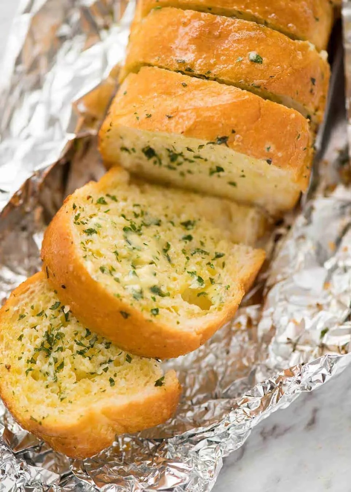

main meal
Garlic Bread
Toasted Bread with Garlic Butter
Baked bread topped with garlic, butter and parsley.
What You'll Need
Ingredients
Bread
- 1 French stick / baguette
Garlic Butter
- 125g unsalted butter, softened
- 2 tsp fresh garlic, finely minced
- ½ tsp cooking salt
- 2 tsp finely chopped parsley (optional)
Time To Cook
Method
Prepare the Bread
Cut the baguette in half.
Slice each half into thick pieces without cutting all the way through.
Make the Garlic Butter
In a small bowl, mix together the softened butter, minced garlic, salt and parsley until well combined.
Butter the Bread
Spread the garlic butter generously between each slice and over the top of the bread.
Wrap and Bake
Preheat the oven to 200°C.
Wrap the bread in tin foil and bake for approximately 15 minutes, until heated through and slightly crispy.
Remove from the oven, unwrap carefully, and wait until cooled down to eat.
Recipe & Image Source
Credits
This Garlic Bread recipe (as well as the images) were
originally published by
RecipeTinEats.com.
Recipe by Nagi Maehashi.